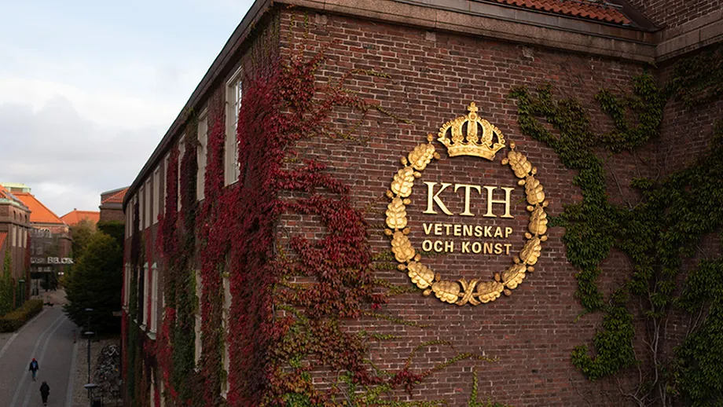
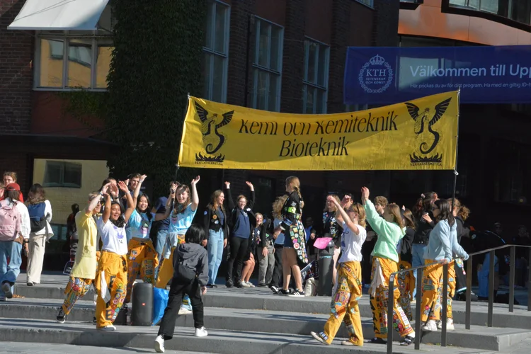
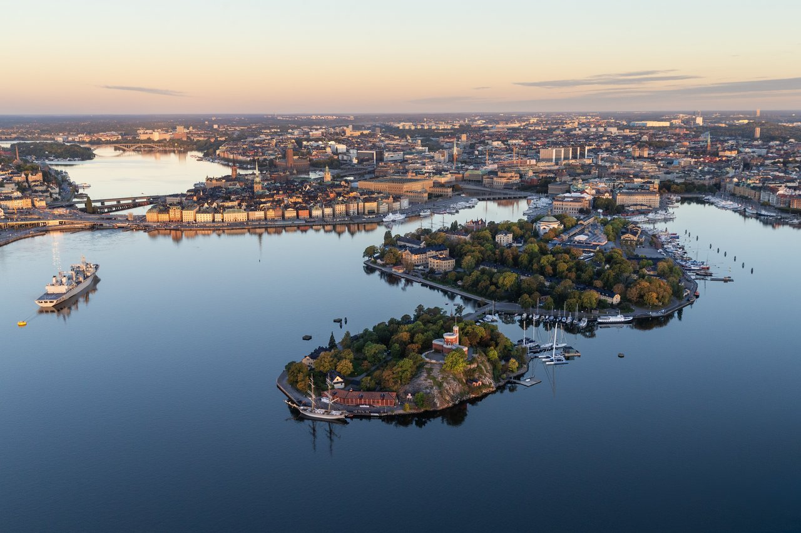
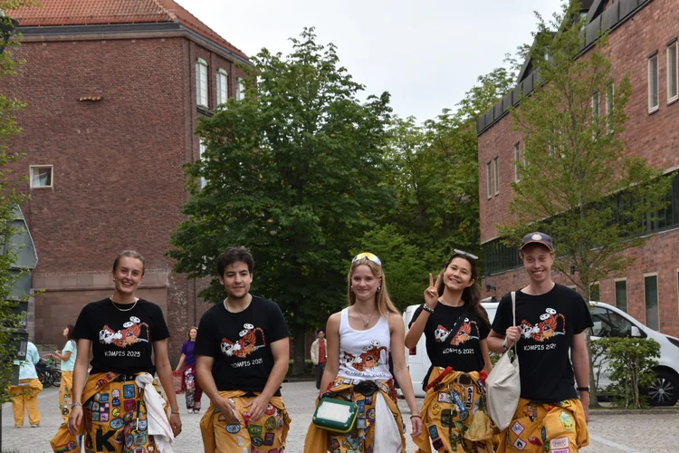

Bioteknikdagarna, som ofta förkortas BTD, är ett event för bioteknikstudenterna i Sverige. Det arrangeras
årligen på något
av lärosätena där utbildningen finns, vilket alltså är i
Uppsala, Linköping, Umeå, Göteborg, Stockholm eller Lund. I år är det Stockholms tur!
Under dagarna bjuds totalt 180 studenter in till inspirerande föreläsningar, studiebesök, workshops och en
arbetsmarknadsmässa,
främst inom bioteknik men även andra naturvetenskapliga områden.
Det ges möjlighet att knyta kontakter med företag och på så vis få en insikt i vad man kan göra som
biotekniker men också träffa studenter från de andra lärosätena. Dessutom händer det mycket roligt under
kvällarna där man får chansen att ta
del av varandras studentliv och dess traditioner.
Sveriges huvudstad Stockholm kombinerar storslagna historiska miljöer med en dynamisk storstadspuls.
Även om man vid första anblick inte kan tro det, så erbjuder Stockholm ett rikt studentliv
som tar plats både på och utanför campus.
Kungliga Tekniska Högskolan (KTH) är landets äldsta tekniska universitet och är därmed en historisk plats
för ingenjörsutbildningar i Sverige. Här finns en stark koppling till forskning och näringsliv,
samtidigt som campus präglas av en öppen och händelserik miljö.
Kemisektionen vid KTH samlar studenter som läser programmen kemiteknik, bioteknik och teknisk kemi,
och står i år som värd för Bioteknikdagarna. Sektionen är känd för sitt stora engagemang,
nära samarbete med andra sektioner och fina traditioner - något som gör att årets BTD i Stockholm kommer bli något alldeles extra!

